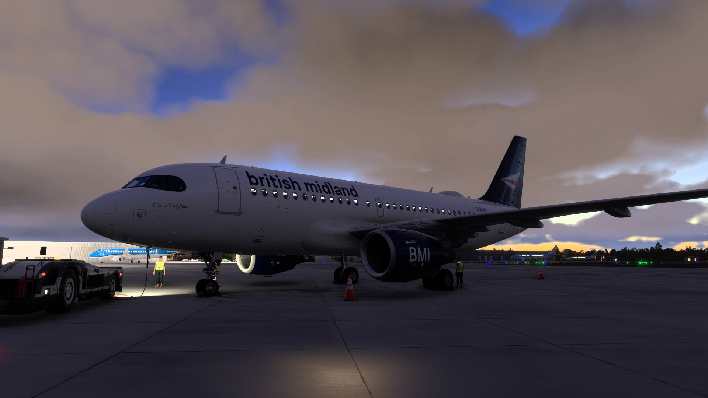

THE BRITISH MIDLAND FLEET
Purpose Built.
Ready for Every Mission.
The British Midland Virtual fleet has been carefully structured around the operational demands of our growing network from Birmingham Airport. Every aircraft type has a clearly defined role, allowing us to match capacity, range and performance to each destination while maintaining a consistent Airbus operating philosophy throughout the airline.
From regional European services aboard the Airbus A319, to our core short-haul operation with the Airbus A320 and higher-capacity Airbus A321 fleet, each aircraft contributes to delivering a realistic and immersive virtual airline experience. Looking ahead, the Airbus A350-1000 will lead the next chapter as British Midland expands into long-haul operations across North America and the Caribbean.
OUR OPERATION
Built Around Birmingham.
Connected Across Europe.
Every aircraft within the British Midland Virtual fleet is assigned to routes where it performs best. This allows us to operate an efficient, realistic schedule whilst reflecting the network planning of a modern airline. From regional business services to high-capacity Mediterranean operations, every fleet type has a clearly defined role within the airline.
9
Aircraft in Fleet
3
Airbus Families
25
European Destinations
BHX
Primary Hub

AIRBUS A319
Regional Specialist
The Airbus A319 is the most versatile aircraft within the British Midland fleet. Its lower seating capacity makes it perfectly suited to regional business markets and thinner European routes while retaining complete Airbus cockpit commonality across the fleet.
Routes Served
- DUB — Dublin
- DUS — Düsseldorf
- BRU — Brussels
- PRG — Prague
- INN — Innsbruck
- GVA — Geneva
Fleet Aircraft
AIRBUS A320
The Backbone of the Network
The Airbus A320 forms the heart of British Midland Virtual's operation. Combining efficiency, flexibility and Airbus commonality, it operates the majority of our scheduled European network from Birmingham, serving both business and leisure destinations.
Routes Served
- AMS — Amsterdam
- CDG — Paris Charles de Gaulle
- MUC — Munich
- ZRH — Zurich
- CPH — Copenhagen
- ARN — Stockholm
- OSL — Oslo
- VIE — Vienna
- MAD — Madrid
- BCN — Barcelona
- MXP — Milan Malpensa
- WAW — Warsaw
Fleet Aircraft


AIRBUS A321
High-Capacity European Operations
The Airbus A321 is assigned to British Midland's busiest European markets, combining greater capacity with the same Airbus operating philosophy found throughout the fleet. It is ideally suited to high-demand city pairs and longer leisure routes from Birmingham.
Routes Served
- FRA — Frankfurt
- FCO — Rome
- ALC — Alicante
- AGP — Málaga
- LIS — Lisbon
- TFS — Tenerife South
- LPA — Gran Canaria
- ACE — Lanzarote
Fleet Aircraft
FUTURE FLEET
Airbus A350-1000
The Pioneers Class
The Airbus A350-1000 represents the next chapter in the British Midland story. As our future flagship, the Pioneers Class will introduce long-haul operations from Birmingham Airport, connecting the Heart of Britain with destinations across North America and the Caribbean while maintaining the premium Airbus experience that defines our airline.
Planned Destinations
Planned Fleet
THE OPERATION TODAY
Built for Today.
Ready for Tomorrow.
Every flight within British Midland Virtual is designed around a realistic route structure, authentic Airbus procedures and a single-hub operation from Birmingham Airport. As our network continues to expand, our fleet will evolve alongside it while remaining true to the values that defined one of Britain's most respected airlines.
9
Aircraft
25
European Routes
4
Future Long-Haul Destinations
1
Birmingham Hub
FLY WITH US
Join the Crew.
Take your place on the flight deck and experience realistic airline
operations from Birmingham Airport to destinations across Europe.
Whether you're flying regional sectors aboard the Airbus A319,
operating our core Airbus A320 network, or commanding the
high-capacity Airbus A321 on some of our busiest routes,
British Midland Virtual offers a professional, welcoming and
immersive environment for every pilot.
Join a community inspired by one of Britain's most iconic airlines
and help write the next chapter of British Midland.